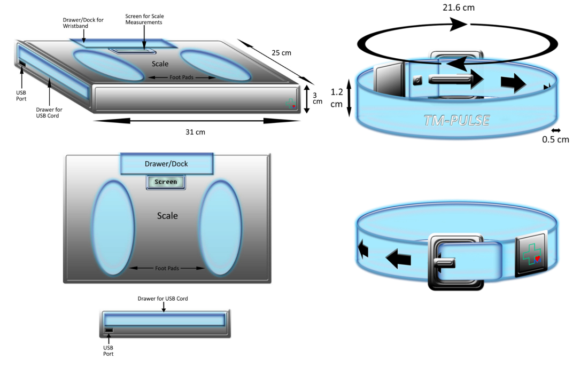

Introducing the TM-Pulse.
By providing fast and easy health benchmarks and communicating this data with doctors, the TM-Pulse will make healthcare more efficient.
Simple, unobtrusive design, and easy-to-use software means long waits in doctors' offices are are things of the past.
Join in this healthcare revolution today by liking us on Facebook or talking to us about an investment. Questions and comments also appreciated!

Presenting the TechMedical Team.
TechMedical Incorporated comprises of 12 brilliant, passionate leaders seeking to make a change in the world.
With youthful creativity and incredible determination, there is perhaps no better group to innovate our healthcare systems.